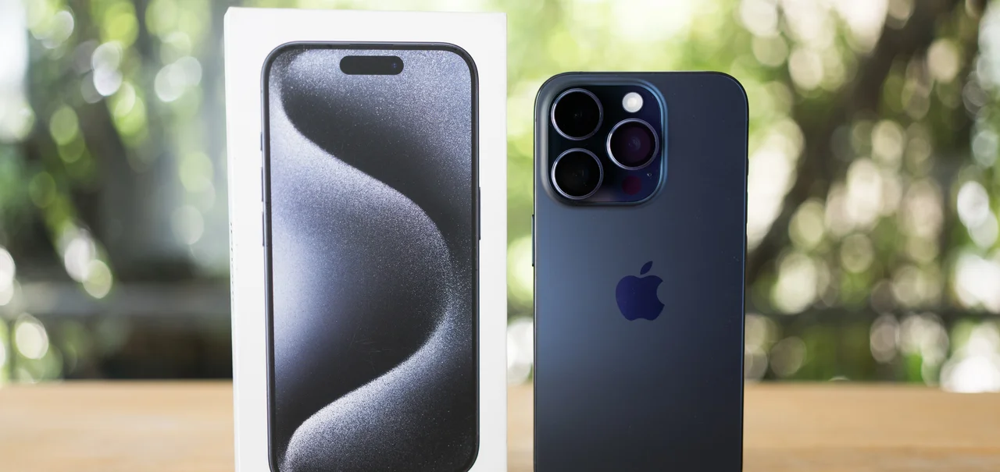

Assistência Técnica especializada em placas, telas e softwares
Atendemos todas as marcas. Diagnóstico rápido, peças de qualidade e garantia no serviço. Traga seu aparelho ou peça uma avaliação remota pelo nosso pré-diagnóstico.
Agende uma avaliação Chamar no WhatsApp

Nossos Serviços
Troca de Tela
Peças premium de alta qualidade e teste completo antes da entrega.
Recuperação de Placas
Reparo e recuperação de placas com solda BGA e análise de componentes.
Diagnóstico de Bateria
Troca de baterias, testes de carga e análise de consumo anormal.
Remoção de Vírus e Software
Formatação, recuperação de dados e instalação do sistema com segurança.
Sobre a Loja
Com mais de 15 anos de experiência, a Markcell oferece soluções em manutenção de celulares com transparência, peças certificadas e garantia.
Atendimento profissional e suporte pós-reparo — buscamos a fidelização pelo serviço bem feito.
Horário de Atendimento
- Seg a Sex: 08h — 18h
- Sábado: até 12h